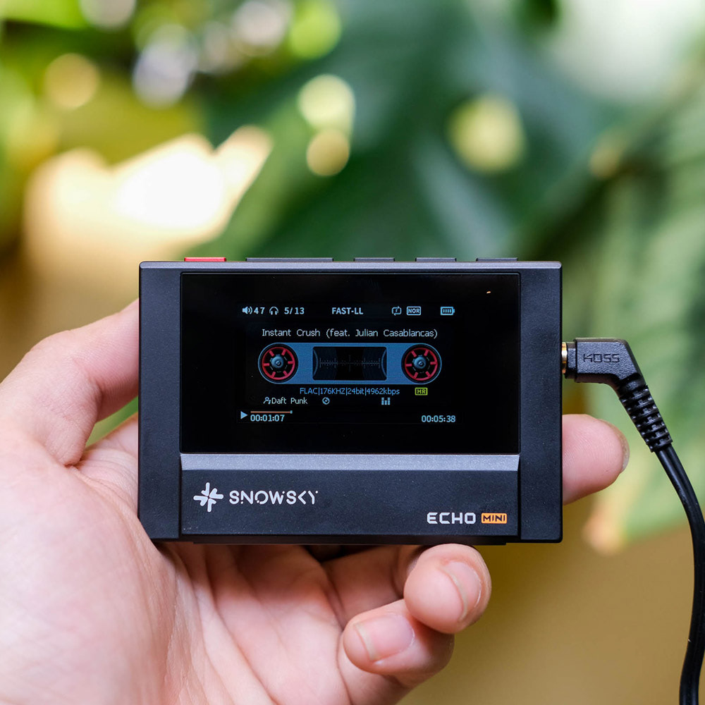
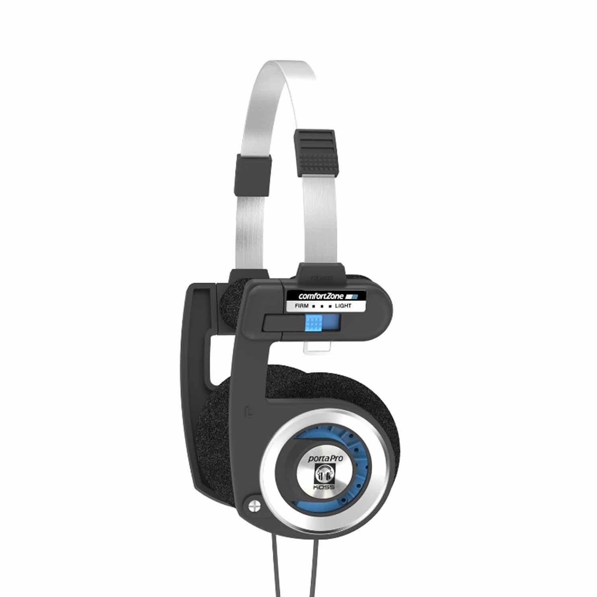

Audio-Technica ATH-M40x

Monitory zamknięte o liniowej charakterystyce.
Cena: 399 PLN
Zobacz szczegóły
Monitory zamknięte o liniowej charakterystyce.
Cena: 399 PLN
Zobacz szczegóły
Podwójny DAC plus wyjścia 3.5mm i 4.4mm w retro stylu
Cena: 379 PLN

Gateway drug solidnego dźwięku od '86 w cenie kabla głośnikowego
Cena: 159 PLN